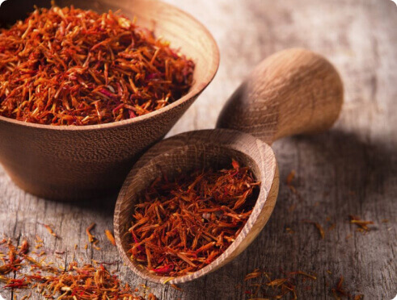

Шафран - король спецій для жінок
Багато хто помилково вважає, що спеції потрібні для того, щоб підсилювати смак їжі або увиразнювати "звучання" того або іншого продукту в загальному гастрономічному ансамблі. Про те, що вони впливають на всі три тіла людини – фізичне (власне тіло), емоційне (душа) і ментальне (розум) – знають небагато. Як і про те, що вони незамінні для жіночого здоров'я – як фізичного, так і психічного.
Королем спецій для жінок є шафран. Він продається у вигляді "вій", кожна з яких не що інше, як висушений маточка (ще його називають приймочкою) крокуса – квітки фіолетово-бузкового кольору з екзотичним ароматом, батьківщиною якого є Середземномор'ї і Мала Азія. Рильця крокуса практично невагомі, і, для того, щоб зібрати хоча б декілька грамів шафрану, треба дуже багато квітів (на один кілограм шафрану йде 100 000 (!) крокусів), тому і коштує ця спеція недешево – близько 80 гривень за 1 грам. Але, оскільки з давніх часів шафран відомий як потужний лікарський засіб (його лікувальну дію описано ще в єгипетських папірусах і китайських медичних книгах, вік деяких з них – 2600 років до нашої ери), він заслуговує на ці витрати.
Оскільки нас цікавлять не загальні лікувальні властивості шафрану, а його вплив на організм жінки, перш за все потрібно сказати: ця спеція має унікальну дію на жіночу гормональну систему. До того ж він корисний у будь-якому віці.
Кілька "війок" на склянку теплого – ні в якому разі не гарячого! – молока (молоді жінки можуть додати ще чайну ложку меду) плюс – насіння коріандру – здатні виконати абсолютно чудодійні речі: нормалізується менструальний цикл, слабшають, а згодом і зовсім зникають властиві клімаксу припливи і відливи і сильне потовиділення, минає пов'язане з нестабільним гормональним фоном роздратування, поліпшується настрій. Вже за 15 хвилин після приймання такого шафранового коктейлю тіло розслабляється, ним розливається тепло – навіть просто на фізичному рівні це дуже приємне відчуття. Ну а за два-три тижні "лікування" без будь-яких медикаментів повністю нормалізується і активізується гормональна система, надалі залишається тільки підтримувати цей стан.